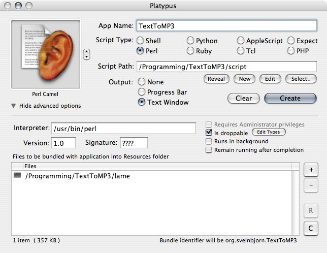

TextToMP3 Example
In this small tutorial, I'll demonstrate how I created the application TextToMP3 using Platypus. TextToMP3 is a Mac OS X droplet application that accepts dropped text files and converts them into speech in MP3 format. This is achieved using Apple's Speech Framework and the open-source LAME MP3 encoder.
Below you can see the Platypus settings for the application. I've put in the application name ("TextToMP3"), I've added my script (which was written in Perl) and I've set the application to be droppable. Additionally, I've added the 'lame' binary (which I had previously compiled) to our application bundle in the "Bundled files list".
I would like the users of the application to see the progress of the encoding, so I've selected the output to be of type "Text Window" so they can see the textual feedback from LAME. I've also taken the trouble of creating a custom icon for the application: an ear on top of a text file.

Now, let's take a quick look at the script for this application. It's very simple.
#!/usr/bin/perl
$cnt = 0;
$lame = "$ARGV[0]/Contents/Resources/lame";
foreach(@ARGV)
{
if ($cnt != 0)
{
system("/usr/bin/say -o /tmp/txt2mp3tmp.aiff -f '$_'");
system("$lame /tmp/txt2mp3tmp.aiff - > '$_.mp3'");
system("rm /tmp/txt2mp3tmp.aiff");
}
$cnt++;
}
The first argument to Platypus applications is always the path to the application bundle. That way, we can get the path to the bundled 'lame' binary, regardless of where a user has chosen to place the application.
Since we have the path to the 'lame' encoder, we can loop through the rest of the arguments to the script (which are the paths of the dropped files). For each of them, we use Apple's say command line program, to convert the text file in question into AIFF audio. This AIFF is created in /tmp. We then convert
the AIFF file to an MP3 encoded audio file using LAME -- the mp3 file will be created in the same place as the originating text file, and will have the same name but a ".mp3" suffix. We then remove the AIFF file, since it is no longer needed.
You have just seen a demonstration of how Platypus can be used to create a useful application with very little effort.
©2006 Sveinbjorn Thordarson